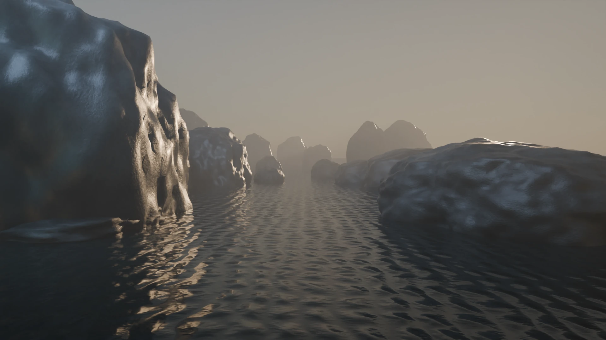
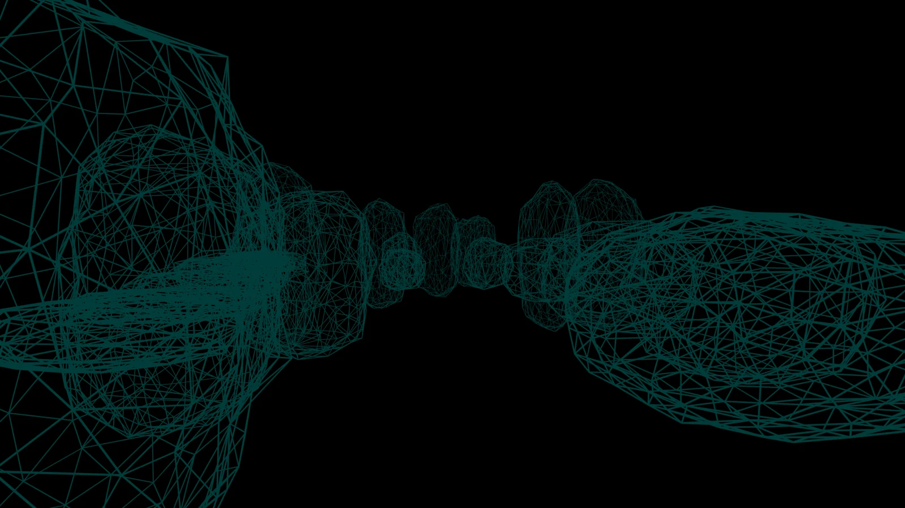
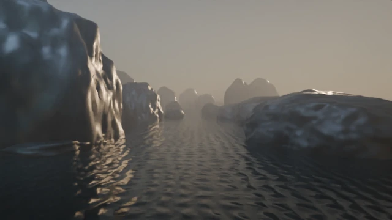
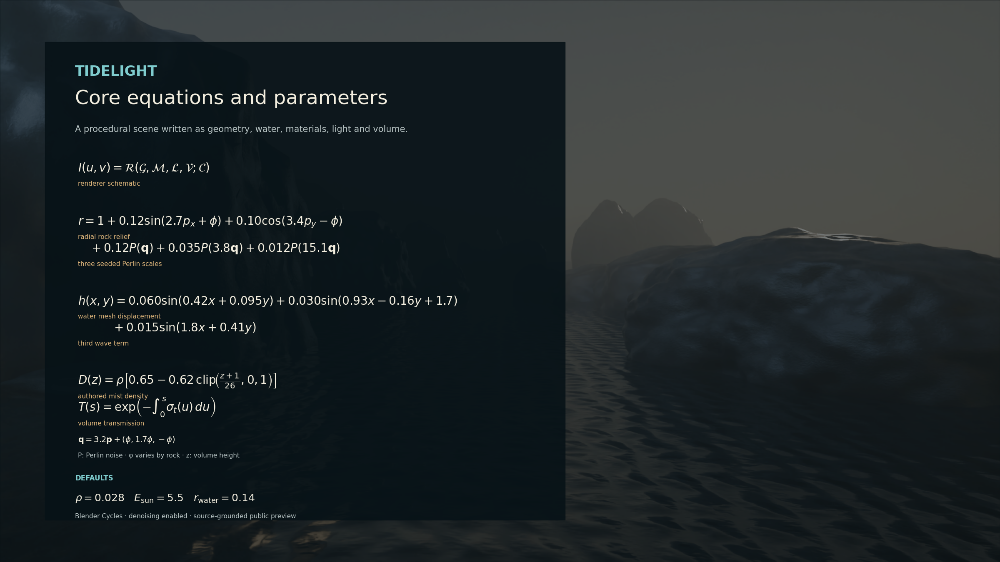
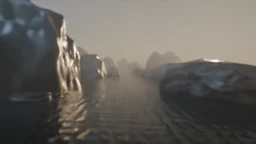

ARKHĒ / FIELD EXPERIMENT 01
TIDELIGHT
A landscape, written in mathematics.
No photograph. No painted texture.
A world built from geometry, materials and light.
An image you can take apart.
The beauty is in the scene.
The surprise is how it is made.
Now the landscape moves.
A continuous camera move past wet stone, traveling water and drifting mist. Watch the ten-second cinematic shot, then reveal the mathematics.
Watch the cinematic study ↗Watch the world take shape.
Six ingredients. One original scene. The equations arrive first; the landscape follows.

01 / GeometryTHE IDEA
An image, assembled from ingredients.
A renderer combines geometry, materials, light, volume and a camera into the image you see.
Find it in the source ↗ Water material ↗Long equations scroll sideways →
Read the scene guide and all equations
Same place.
A different atmosphere.
Choose one control. Its equation and the corresponding image change together.

DENSITY
More mist scatters and attenuates light along the view, softening distant forms.
Three pre-rendered settings. Only the selected control changes; all other settings stay at their defaults.
TRY THE MATHEMATICS
Three waves.
One surface.
Switch each term on or off. The ivory curve is their sum, evaluated live at the selected cross-section.
Exact mesh-height terms in local scene coordinates. This graph changes live; the cinematic renders above remain fixed. Fine shader normals add smaller details to the water.
03 / THE WHOLE PICTURE
Keep the image.
Keep the equations.
The core expressions and parameters, beside the world they help create.
Download the equation sheet ↓
A compact guide to the scene. The full procedural source and Blender renderer supply the remaining detail.

VIEW FULL SIZE ↗Can the image
give its controls back?
Hide three settings. Give the solver a rendered image and the known scene model. Ask it to recover mist density, sunlight and water roughness.

TARGETRECOVEREDCASE A / RECOVERED
The controls came back.
- Largest parameter error
- Image RMSE reduction
Parameter error is relative to each allowed range. Image improvement is measured against the fixed default scene.
| Control | Hidden value | Recovered | Range error |
|---|
THE RECORDED SEARCH
Every attempt counts.
Scrub the saved objective values, including unsuccessful candidates. This replays the recorded run.
The method, acceptance rule and limits
What was tested
Three synthetic targets from this same procedural model. Geometry, materials, camera and renderer were known. Only mist density, sunlight energy and water roughness were hidden from the fitting interface.
Powell search had a fixed 70-render budget per case. Fitting used 256 × 144 images, 16 samples and a log1p multiscale RGB objective. All three searches exhausted their budget.
What counted as a pass
Every parameter had to be within 8% of its allowed range, with at least 50% lower raw scene-linear RGB RMSE than the defaults on the fitted image and both held-out conditions.
The held-out camera moved sideways by 1.08 scene units. A second test also set sunlight to 6.5. Held-out renders used 64 samples and a different fixed seed. Returning defaults failed the negative control in all three cases.
What the failure teaches
Case B reduced image error but missed mist and sunlight accuracy. A closer-looking picture is not enough to claim the controls were recovered. This budget-limited failure does not establish fundamental ambiguity.
What this does not establish
This is parameter recovery within a known model, not reconstruction of arbitrary photographs or discovery of new equations. Targets were withheld through a process interface on a shared filesystem, not cryptographic isolation.
A fresh-process rebuild differed by RMSE 3.51 × 10⁻⁷, within the declared tolerance; it was not byte-identical.
The scene ends.
The exploration doesn't.
Read the program, open the scene, or repeat the experiment.
Created by Adem Vessell with Codex. Original procedural geometry and materials, rendered in Blender Cycles with denoising. No downloaded photographs or textures are used in the scene.
Inspired by Hamid Naderi Yeganeh’s equation-art practice. Tidelight is our own scene and experiment; it makes no claim about his private workflow.